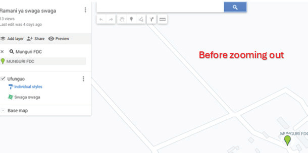
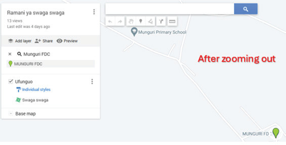

show the route to follow when measuring the distance from Munguri FDC to Munguri Primary School.

(a)
Before zooming out

(b)
After zooming out
Figure 23: Zooming out to show the route connecting the two points
(d) To measure the distance, select the ruler icon as shown in Figure 24. This icon allows you to measure distances for features like roads, railways and rivers and areas for features like forests, dams, lakes, and administrative boundaries.